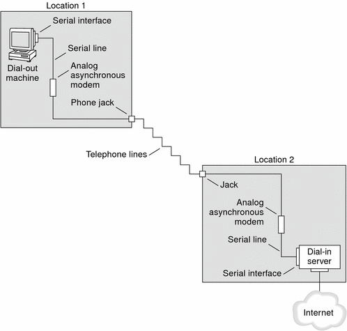

Previous
Previous
PPP Configurations and Terminology
This section introduces PPP configurations. The section also defines terms that are used in this guide.
Solaris PPP 4.0 supports a number of configurations.
Switched-access, or dial-up, configurations
Hardwired, or leased-line configurations
The previous figure shows a basic PPP link. The link has the following parts:
Two machines, usually in separate physical locations, called peers. A peer could be a personal computer, engineering workstation, large server, or even a commercial router, depending on a site's requirements.
Serial interface on each peer. On Solaris machines, this interface could be cua, hihp, or other interface, depending on whether you configure asynchronous or synchronous PPP.
Physical link, such as a serial cable, a modem connection, or a leased line from a network provider, such as a T1 or T3 line.
Dial-up PPP Overview
The most commonly used PPP configuration is the dial-up link. In a dial-up link, the local peer dials up the remote peer to establish the connection and run PPP. In the dial-up process, the local peer calls the remote peer's telephone number to initiate the link.
A common dial-up scenario includes a home computer that calls a peer at an ISP, configured to receive incoming calls. Another scenario is a corporate site where a local machine transmits data over a PPP link to a peer in another building.
In this guide, the local peer that initiates the dial-up connection is referred to as the dial-out machine. The peer that receives the incoming call is referred to as the dial-in server. This machine is actually the target peer of the dial-out machine and might or might not be a true server.
PPP is not a client-server protocol. Some PPP documents use the terms “client” and “server” to refer to telephone call establishment. A dial-in server is not a true server like a file server or name server. Dial-in server is a widely used PPP term because dial-in machines often “serve” network accessibility to more than one dial-out machine. Nevertheless, the dial-in server is the target peer of the dial-out machine.
Parts of the Dial-up PPP Link
See the following figure.
Figure 15-2 Basic Analog Dial-up PPP LinkThe configuration for Location 1, the dial-out side of the link, is composed of the following elements:
Dial-out machine, typically a personal computer or workstation in an individual's home.
Serial interface on the dial-out machine. /dev/cua/a or /dev/cua/b is the standard serial interface for outgoing calls on machines that run Solaris software.
Asynchronous modem or ISDN terminal adapter (TA) that is connected to a telephone jack.
Telephone lines and services of a telephone company.
The configuration for Location 2, the dial-in side of the link, is composed of the following elements:
Telephone jack or similar connector, which is connected to the telephone network
Asynchronous modem or ISDN TA
Serial interface on the dial-in server, either ttya or ttyb for incoming calls
Dial-in server, which is connected to a network, such as a corporate intranet, or, in the instance of an ISP, the global Internet
Using ISDN Terminal Adapters With a Dial-out Machine
External ISDN TAs have faster speeds than modems, but you configure TAs in basically the same way. The major difference in configuring an ISDN TA is in the chat script, which requires commands specific to the TA's manufacturer. Refer to Chat Script for External ISDN TA for information about chat scripts for ISDN TAs.
What Happens During Dial-up Communications
PPP configuration files on both the dial-out and dial-in peers contain instructions for setting up the link. The following process occurs as the dial-up link is initiated.
User or process on the dial-out machine runs the pppd command to start the link.
Dial-out machine reads its PPP configuration files. The dial-out machine then sends instructions over the serial line to its modem, including the phone number of the dial-in server.
Modem dials the phone number to establish a telephone connection with the modem on the dial-in server.
The series of text strings that the dial-out machine sends to the modem and dial-in server are contained in a file called a chat script. If necessary, the dial-out machine sends commands to the dial-in server to invoke PPP on the server.
Modem attached to the dial-in server begins link negotiation with the modem on the dial-out machine.
When modem-to-modem negotiation is completed, the modem on the dial-out machine reports “CONNECT.”
PPP on both peers enters Establish phase, where Link Control Protocol (LCP) negotiates basic link parameters and the use of authentication.
If necessary, the peers authenticate each other.
PPP's Network Control Protocols (NCPs) negotiate the use of network protocols, such as IPv4 or IPv6.
The dial-out machine can then run telnet or a similar command to a host that is reachable through the dial-in server.
Leased-Line PPP Overview
A hardwired, leased-line PPP configuration involves two peers that are connected by a link. This link consists of a switched or an unswitched digital service leased from a provider. Solaris PPP 4.0 works over any full-duplex, point-to-point leased-line medium. Typically, a company rents a hardwired link from a network provider to connect to an ISP or other remote site.